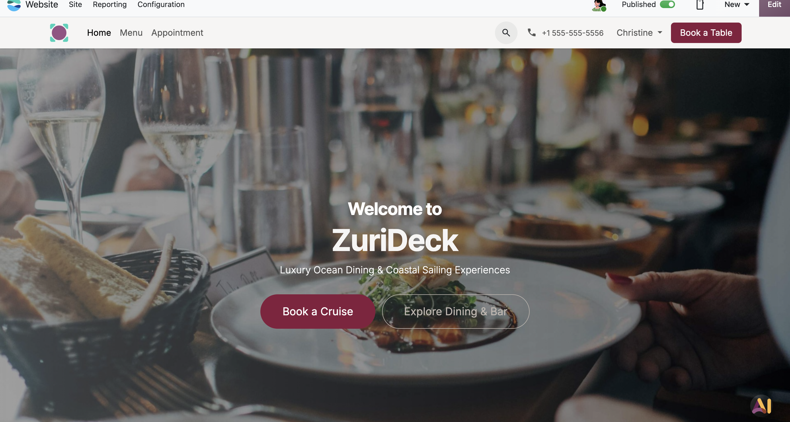
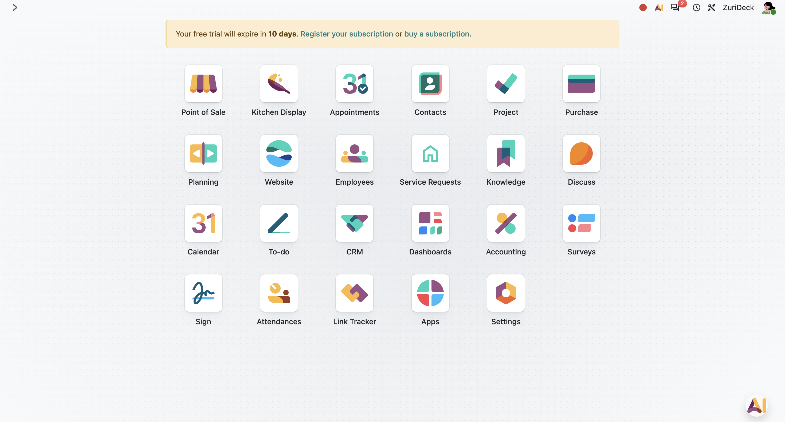
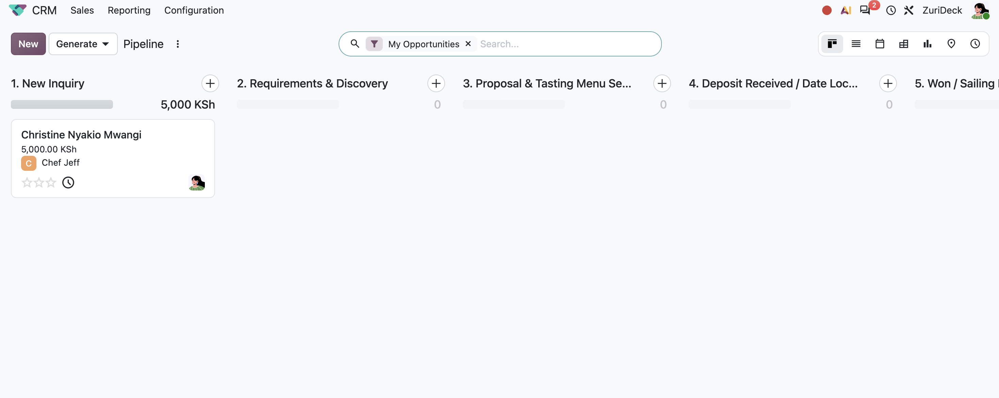
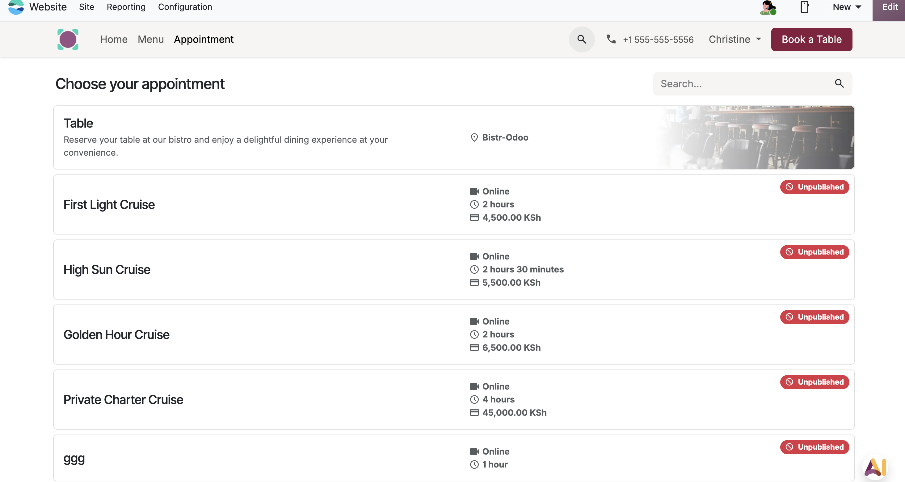
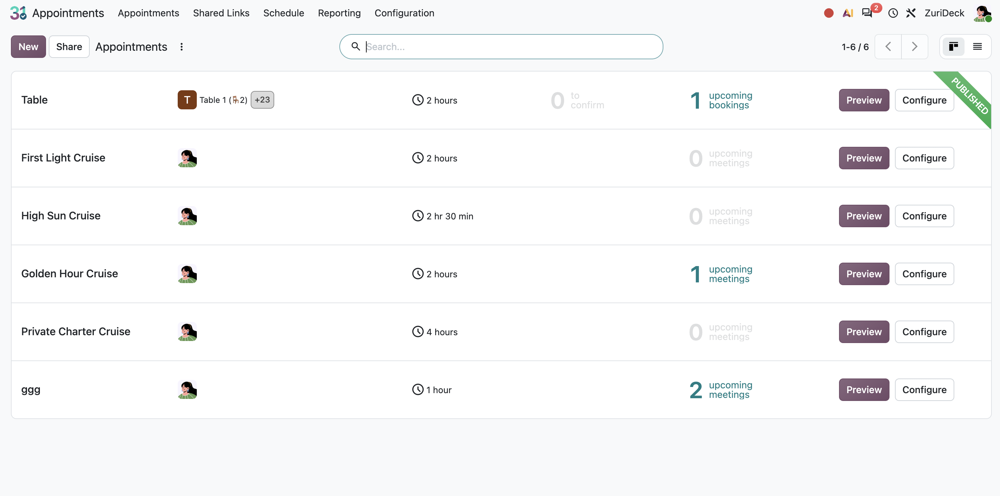
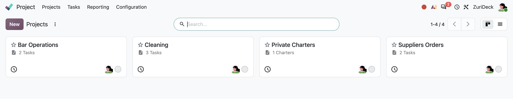
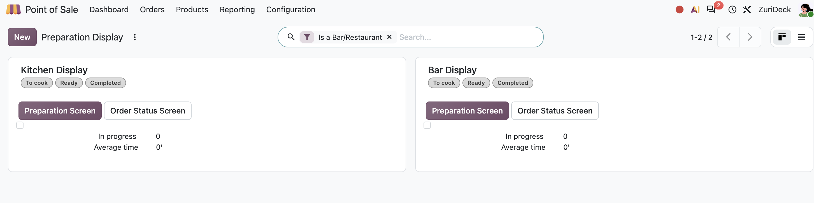

Requests without accountability
Teams needed a clear owner, response trail, and customer context for each request, plus a way to break broad work into itemised lines.
Odoo ERP · Hospitality operations demo
A demonstration of how Odoo can bring website bookings, sales enquiries, restaurant fulfilment, and operational coordination into one connected workspace for a coastal hospitality business.

Odoo consultant & developer
Restaurant and charter operations
Demonstration implementation
ZuriDeck needed a coherent way to manage dining and charter requests while keeping teams aligned on bookings, preparation, and operational work. I mapped that journey into connected Odoo modules.
The demo brings together the modules needed to manage a customer journey and the internal work behind it: Website, Appointments, CRM, Project, Point of Sale, Kitchen Display, Contacts, Purchase, Planning, and supporting operations apps.

I designed a purpose-built Service Requests application in Odoo Studio on Odoo 18 Enterprise to centralise client requests, technical interventions, and maintenance enquiries that would otherwise be scattered across calls, email, and team messages.
Teams needed a clear owner, response trail, and customer context for each request, plus a way to break broad work into itemised lines.
Parent-child records support an itemised request breakdown, while every request links directly to the relevant customer record in res.partner.
Native Chatter, mail gateway, and activity planning provide a shared communication history and structured follow-up without custom Python or third-party modules.
Built natively with Odoo Studio, the module uses Odoo’s PostgreSQL, ORM, QWeb, Chatter, and activity framework while keeping the solution maintainable for ZuriDeck’s East Africa operations.
I configured a CRM pipeline that makes each commercial stage visible, from a new enquiry and requirements discovery through proposal, deposit confirmation, and a confirmed sailing or service date.



After confirmation, the work shifts to internal coordination. Project workspaces organise bar operations, cleaning, private charters, and supplier orders, while Point of Sale preparation displays help kitchen and bar teams track service status.


My approach to Odoo is grounded in process design: start with how a business receives work, coordinate the people behind it, and give each team a clear system of record. This demo translates that approach into a practical hospitality ERP workflow.
Explore more work